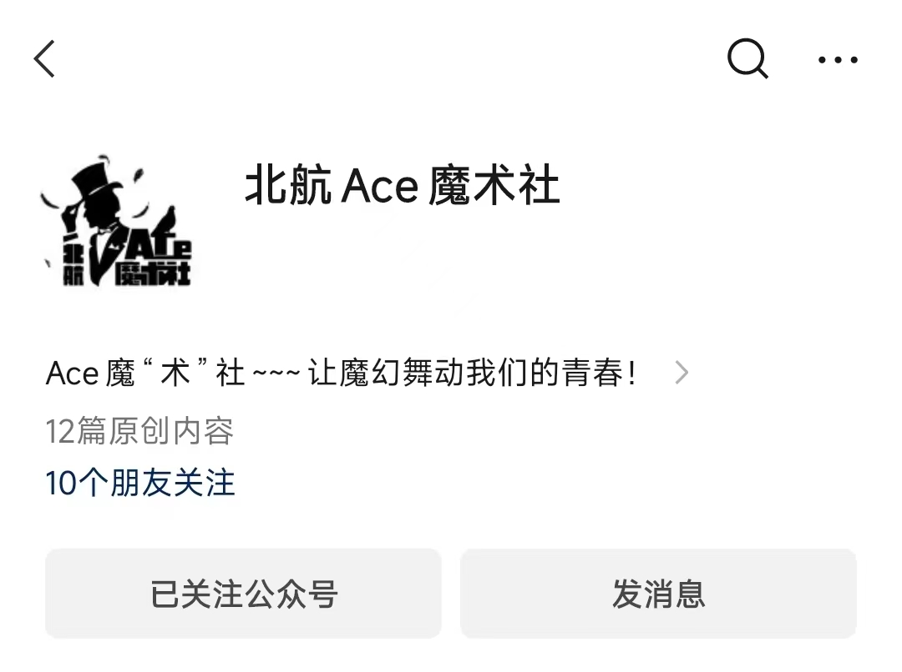
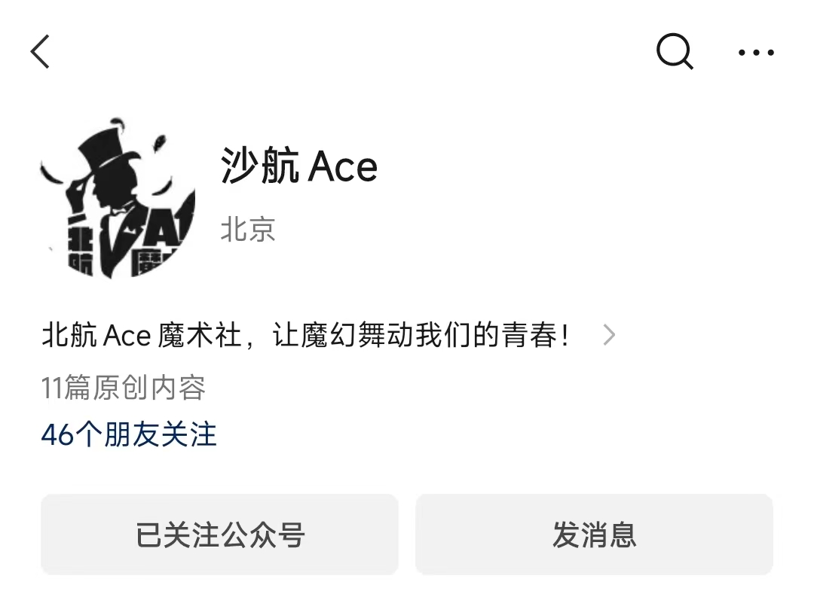

简介：
Ace魔术社由北京航空航天大学学生自己创建并管理，同时拥有专业魔术师进行技术指导。
本社团将本着“树立鉴赏意识、发展创新思维、培养观察能力、提高创作欲望”的宗旨，在每次活动时，向社员介绍魔术发展历史，魔术师个人资料，
魔术道具资料，基本魔术原理，并教授社员一些简单，实用的小魔术，基本魔术手法和初级魔术流程。
鼓励社员发扬创新精神，不拘泥于原有的魔术形式，创造属于自己的新魔术。让社员们能够在活动中真正有所收获，并能把魔术的快乐带给他人。
同时，Ace魔术社还不定期播放魔术欣赏与教学视频，让社员领略目前世界上最新，最时尚的魔术，使他们能更多领会到魔术的魅力。
一方面，我们希望使魔术走进大学校园，走入每个学生的生活，让大学生成为魔术文化的爱好者，宣传者和普及者；
另一方面，我们希望使广大学生在繁忙的学业之余，学习、了解魔术这一富有创新精神的文化艺术。
发展：
2013年，尉青峰创办Ace魔术社
20**年，第一次举办属于社团自己的专场魔幻之夜
Ace魔术社自建立至今，经历了十届管理层，每年会举办一到两次魔幻之夜魔术专场晚会
社团章程：
1. 各成员接到开例会、活动等通知后应到指定地点集合，不可无故拖延。
2. 社团开例会、活动中，不可无故缺席，有事需提前请假，若有多次无故缺席则视为自动退社。
3. 社团进行例会等活动中，若携带非本社团成员需提前请示，以免发生不必要的争端。
4. 社团成员之间应和睦相处，若发生不文明等不良行为，将会被强制退社
5. Ace魔术社自2018年开启商演模式，第四届成员也制订了相关规定，详情见附件一。
6. 为了社团更好发展，每一位干事都会有其负责的工作(与日常教学不冲突)，每位干事应完成其本职工作，任务分工见附件二。
演出规定：
一、演出规定
1. 除社员在本系(书院)进行的联谊性质演出外，魔术社的任何演出活动，都要由社长记录，并在群内发布。
社员本系(书院)联谊性质演出，社长负责记录不在群内发布(若该演出为收费演出，具体规定见“二、收费演出”)。
2. 社员演出道具可向社内借用，其中非消耗性道具免费使用，消耗性道具需缴纳与使用次数相对应的费用。
社员有权建议社团购买某种道具以满足其演出要求同样的，社团有权在考虑性价比及适用范围等多方面因素后，拒绝该建议。
二、收费演出
1. 基于社团运营需要，特制订收费演出规定。
2. 社团成员需有至少一次免费演出经历，才可参加收费演出。
3. 在社团人员短缺情况下，参加收费演出社员有接受社团指派的义务。
4. 社长与财务部协商，综合道具费用、人员数量、时间损耗，给出参考费用，参考费用划分等级，
100-800，且有责任与社外团体或个人协商，并保证社员权益。
5. 社员在演出结束后，需向社内上交40%演出费用用以社团日常运作，由财务部负责落实。
6. 为保证演出质量，社团成员参与演出前，需联系社长安排审核，
若被审核成员节目存在问题，参加审核部长提出改正意见，审核存在不通过，则换用其他成员为
保证审核公平性和严肃性，审核地点、审核时间、审核人，由审核人在群内发公告通知，社团成员可以前往观看。
三、免费演出
1. 基于魔术社创建宗旨，特制订免费演出规定
2. 免费演出仍需报销道具费用。
3. 校内所有社团邀请以及社联活动均为免费演出。
4. 校外所有魔术社社团均为免费演出
5. 社内重大活动为免费演出，且社内成员需积极主动，在人员不足情况下，社团可以指派参加过收费演出的社员。
6. 对于校内社团及校外魔术社如有对Ace魔术社收费行为或谈及收费话题记录则划分到收费演出范围，记录工作由财务部负责。
四、拒绝演出
1. 不尊重Ace魔术社及社内成员的团体或个人，社长有权拒绝演出邀请。
2. 有不按双方协商缴纳或拖演出费用的团体或个人，社长有权拒绝演出邀请。
3. 在社内有重大活动时，社长可在考虑时间、人力情况下，拒绝演出邀请。
4. 不排除在特殊情况下，无理由拒绝演出邀请。
五、此方案为试行方案，今后会有所改正，也欢迎大家提出改进意见
社团分工：
财政部
1. 购买道具，为社团添置必要的设备、书籍等
2. 管理经费，做好社团每一笔经费出入，账单上每一笔账目需具有日期项目、费用等必要信息议。
3. 收取入社社费、表演劳务等
教学部
1. 制作社团的定期教学计划，并进行教学
2. 负责对表演节目的审查、建议改进等
工信部
1. 拍摄视频、照片等
2. 微信公众号的运营和定期信息发布
宣传部
1. 制作横幅
2. 制作海报、招新宣传单
3. 负责每学期的招新安排工作
团支书
负责社团人员信息统计，进入/退出社团等信息
副社长
1. 时刻关注社团动态，维护社团利益。宏观管理社团，出谋划策。秉承“社团是我家”的原则
2. 当部门人员因故无法完成自己的任务或者参加活动时应无条件候补
备注
1. 根据社联、团委规定，社长不可以兼任财务部部长
2. 财政部、教学部、工信部、宣传部部长可兼任副社长一职
3. 社长保留一切最终解释权。
社团活动：
日常例会
社团每周会在沙河和学院路小区各开展一次例会活动，例会上会有不同类型魔术的教学、各种魔术知识的讲解，
也会有社员们精彩的魔术表演。我们也会不定时邀请往届的成员以及校外的专业魔术师来指导交流。
不管是零基础小白还是魔术大佬，都可以收获掌声与赞叹，都可以一起交流、一起学习、一起欣赏魔术的艺术魅力。
魔幻之夜
每年社团都会举办一次魔幻之夜魔术专场晚会，所有社员都可以报名参加，登台表演。
社团会帮助参演社员挑选节目、完善流程、改进台词等等，即使零基础的新社员，也可以在短时间内完成一次精彩的魔术表演。
晚会面向全校师生开放，有表演意愿的社员都可以在魔幻之夜的舞台上收获老师同学的掌声。
我们还会邀请到其他高效的魔术社团来表演，一起交流学习共同进步。
社团外场
除了魔幻之夜晚会，我们还会不定期在室外路演，以及参加社团中心等的外场表演活动
（如百团大战、荧光夜跑等），锻炼社员的表演水平和临场反应能力。
各种晚会
校内各书院、学院或其他社团举办晚会时，经常会向社团招收节目，有意愿的社员可以报名参演，
社团内有能力的社员会提供节目挑选、审查、改进等帮助。
其他高校社团邀请参演时，我们也会到其他高校晚会表演节目，与他们交流学习。
日常例会
社团每周会在沙河和学院路小区各开展一次例会活动，例会上会有不同类型魔术的教学、各种魔术知识的讲解，
也会有社员们精彩的魔术表演。我们也会不定时邀请往届的成员以及校外的专业魔术师来指导交流。
不管是零基础小白还是魔术大佬，都可以收获掌声与赞叹，都可以一起交流、一起学习、一起欣赏魔术的艺术魅力。
宣传片拍摄
社团每年会拍摄宣传片，各种不同类型精彩的魔术效果以及花切都会入镜，在招新等各种社团活动时起到宣传作用。
社团聚会
社团成员会经常聚餐、约桌游、交流魔术等，相处非常融洽。
联系我们：
社团招新
Ace魔术社的招新与学校的百团招新同步进行，欢迎加入我们，你可以通过“北航社团中心”关注春招秋招具体相关消息。
也可以加入我们的招新QQ群咨询具体信息，如果不在学校规定的招新时间内，也可以在群中咨询群主或管理员相关具体情况。
右边是2023年秋季招新及2024年春季招新的QQ群，欢迎加入群聊和我们探讨魔术的秘密，也更加欢迎你的加入。
公众媒体
目前社团主要公众社交媒体为微信公众号，同时社团抖音号、B站号等也在积极筹办中，敬请期待。
社团微信公众号有“北航Ace魔术社”及"沙航Ace"，其中“北航Ace魔术社”因为部分原因不再使用，目前主要
使用公众号为“沙航Ace”，公众号中有社团例会、晚会、活动的公告等，欢迎您的关注。


其他事务
如有其他事务需要联系社团，如演出、合作等，可以通过社长邮箱进行联系：318373155@qq.com
内容目录：
⼀、社团简介
⼆、社团发展
三、社团章程
四、演出规定
五、社团分工
六、社团活动
七、联系我们